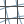

Docs for ‘QGIS testing’. Visit http://docs.qgis.org/2.14 for QGIS 2.14 docs and translations.
Using QGIS Core Plugins¶
| Icon | Plugin | Description | Manual Reference |
|---|---|---|---|
 |
Coordinate Capture | Capture mouse coordinate in different CRS | Coordinate Capture Plugin |
 |
DB Manager | Manage your databases within QGIS | DB Manager Plugin |
 |
DXF2Shape Converter | Converts from DXF to SHP file format | Dxf2Shp Converter Plugin |
 |
eVis | Event Visualization Tool | eVis Plugin |
| fTools | A suite of vector tools | fTools Plugin | |
 |
GDAL Tools | GDAL raster functionality | GDAL Tools Plugin |
| Geometry Checker | Check and repair errors in vector geometries | Geometry Checker Plugin | |
| Geometry Snapper | Snap geometries to a reference layer | Geometry Snapper Plugin | |
|  | Georeferencer GDAL | Georeference rasters with GDAL | Georeferencer Plugin |
 |
GPS Tools | Tools for loading and importing GPS data | GPS Plugin |
 |
GRASS | GRASS functionality | GRASS GIS Integration |
 |
Heatmap | Create heatmap rasters from input vector points | Heatmap Plugin |
| Interpolation plugin | Interpolation on base of vertices of a vector layer | Interpolation Plugin | |
| Metasearch Catalogue Client | Interact with metadata catalogue services (CSW) | MetaSearch Catalogue Client | |
 |
Offline Editing | Offline editing and synchronizing with database | Offline Editing Plugin |
| Oracle Spatial Georaster | Access Oracle Spatial GeoRasters | Oracle Spatial GeoRaster Plugin | |
| Plugin Manager | Manage core and external plugins | The Plugins Dialog | |
| Processing | Spatial data processing framework | QGIS processing framework | |
 |
Raster Terrain Analysis | Compute geomorphological features from DEMs | Raster Terrain Analysis Plugin |
| Road Graph plugin | Shortest path analysis | Road Graph Plugin | |
| Spatial Query | Spatial queries on vectors | Spatial Query Plugin | |
| Topology Checker | Find topological errors in vector layers | Topology Checker Plugin | |
| Zonal Statistics | Calculate raster statistics for vector polygons | Zonal Statistics Plugin |
{kind=link}
{kind=link}
{kind=link}
{kind=link}
{kind=link}
{kind=link}
{kind=link}
{kind=link}
{kind=link}
{kind=link}
{kind=link}
{kind=link}